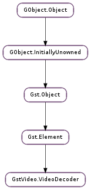

| add_to_frame(n_bytes) | |
| allocate_output_buffer() | |
| allocate_output_frame(frame) | |
| drop_frame(frame) | |
| finish_frame(frame) | |
| get_allocator() | |
| get_buffer_pool() | |
| get_estimate_rate() | |
| get_frame(frame_number) | |
| get_frames() | |
| get_latency() | |
| get_max_decode_time(frame) | |
| get_max_errors() | |
| get_oldest_frame() | |
| get_output_state() | |
| get_packetized() | |
| get_qos_proportion() | |
| have_frame() | |
| merge_tags(tags, mode) | |
| negotiate() | |
| release_frame(frame) | |
| set_estimate_rate(enabled) | |
| set_latency(min_latency, max_latency) | |
| set_max_errors(num) | |
| set_output_state(fmt, width, height, reference) | |
| set_packetized(packetized) |
None
None
| Name | Type | Access |
|---|---|---|
| element | Gst.Element | r |
| input_segment | Gst.Segment | r |
| output_segment | Gst.Segment | r |
| sinkpad | Gst.Pad | r |
| srcpad | Gst.Pad | r |
| stream_lock | GLib.RecMutex | r |
Bases: Gst.Element
This base class is for video decoders turning encoded data into raw video frames.
The GstVideo.VideoDecoder base class and derived subclasses should cooperate as follows:
Initially, GstVideo.VideoDecoder calls start when the decoder element is activated, which allows the subclass to perform any global setup.
GstVideo.VideoDecoder calls set_format to inform the subclass of caps describing input video data that it is about to receive, including possibly configuration data. While unlikely, it might be called more than once, if changing input parameters require reconfiguration.
Incoming data buffers are processed as needed, described in Data Processing below.
GstVideo.VideoDecoder calls stop at end of all processing.
The base class gathers input data, and optionally allows subclass to parse this into subsequently manageable chunks, typically corresponding to and referred to as ‘frames’.
Each input frame is provided in turn to the subclass’ handle_frame callback. The ownership of the frame is given to the handle_frame callback.
If codec processing results in decoded data, the subclass should call gst_video_decoder_finish_frame to have decoded data pushed. downstream. Otherwise, the subclass must call gst_video_decoder_drop_frame, to allow the base class to do timestamp and offset tracking, and possibly to requeue the frame for a later attempt in the case of reverse playback.
The GstVideo.VideoDecoder class calls stop to inform the subclass that data parsing will be stopped.
When the pipeline is seeked or otherwise flushed, the subclass is informed via a call to its reset callback, with the hard parameter set to true. This indicates the subclass should drop any internal data queues and timestamps and prepare for a fresh set of buffers to arrive for parsing and decoding.
At end-of-stream, the subclass parse function may be called some final times with the at_eos parameter set to true, indicating that the element should not expect any more data to be arriving, and it should parse and remaining frames and call GstVideo.VideoDecoder.have_frame () if possible.
The subclass is responsible for providing pad template caps for source and sink pads. The pads need to be named “sink” and “src”. It also needs to provide information about the ouptput caps, when they are known. This may be when the base class calls the subclass’ set_format function, though it might be during decoding, before calling gst_video_decoder_finish_frame. This is done via gst_video_decoder_set_output_state
The subclass is also responsible for providing (presentation) timestamps (likely based on corresponding input ones). If that is not applicable or possible, the base class provides limited framerate based interpolation.
Similarly, the base class provides some limited (legacy) seeking support if specifically requested by the subclass, as full-fledged support should rather be left to upstream demuxer, parser or alike. This simple approach caters for seeking and duration reporting using estimated input bitrates. To enable it, a subclass should call gst_video_decoder_set_estimate_rate to enable handling of incoming byte-streams.
The base class provides some support for reverse playback, in particular in case incoming data is not packetized or upstream does not provide fragments on keyframe boundaries. However, the subclass should then be prepared for the parsing and frame processing stage to occur separately (in normal forward processing, the latter immediately follows the former), The subclass also needs to ensure the parsing stage properly marks keyframes, unless it knows the upstream elements will do so properly for incoming data.
The bare minimum that a functional subclass needs to implement is:
| Parameters: | n_bytes (int) – the number of bytes to add |
|---|
Removes next n_bytes of input data and adds it to currently parsed frame.
| Returns: | allocated buffer, or None if no buffer could be allocated (e.g. when downstream is flushing or shutting down) |
|---|---|
| Return type: | Gst.Buffer |
Helper function that allocates a buffer to hold a video frame for decoder ‘s current GstVideo.VideoCodecState.
You should use GstVideo.VideoDecoder.allocate_output_frame () instead of this function, if possible at all.
| Parameters: | frame (GstVideo.VideoCodecFrame) – a GstVideo.VideoCodecFrame |
|---|---|
| Returns: | Gst.FlowReturn.OK if an output buffer could be allocated |
| Return type: | Gst.FlowReturn |
Helper function that allocates a buffer to hold a video frame for decoder ‘s current GstVideo.VideoCodecState. Subclass should already have configured video state and set src pad caps.
The buffer allocated here is owned by the frame and you should only keep references to the frame, not the buffer.
| Parameters: | frame (GstVideo.VideoCodecFrame) – the GstVideo.VideoCodecFrame to drop |
|---|---|
| Returns: | a Gst.FlowReturn, usually Gst.FlowReturn.OK. |
| Return type: | Gst.FlowReturn |
Similar to GstVideo.VideoDecoder.finish_frame (), but drops frame in any case and posts a QoS message with the frame’s details on the bus. In any case, the frame is considered finished and released.
| Parameters: | frame (GstVideo.VideoCodecFrame) – a decoded GstVideo.VideoCodecFrame |
|---|---|
| Returns: | a Gst.FlowReturn resulting from sending data downstream |
| Return type: | Gst.FlowReturn |
frame should have a valid decoded data buffer, whose metadata fields are then appropriately set according to frame data and pushed downstream. If no output data is provided, frame is considered skipped. In any case, the frame is considered finished and released.
After calling this function the output buffer of the frame is to be considered read-only. This function will also change the metadata of the buffer.
| Return type: | allocator: Gst.Allocator, params: Gst.AllocationParams |
|---|
Lets GstVideo.VideoDecoder sub-classes to know the memory allocator used by the base class and its params.
Unref the allocator after use it.
| Returns: | the instance of the Gst.BufferPool used by the decoder; free it after use it |
|---|---|
| Return type: | Gst.BufferPool |
| Parameters: | frame_number (int) – system_frame_number of a frame |
|---|---|
| Returns: | pending unfinished GstVideo.VideoCodecFrame identified by frame_number. |
| Return type: | GstVideo.VideoCodecFrame |
Get a pending unfinished GstVideo.VideoCodecFrame
| Returns: | pending unfinished GstVideo.VideoCodecFrame. |
|---|---|
| Return type: | [GstVideo.VideoCodecFrame] |
Get all pending unfinished GstVideo.VideoCodecFrame
| Return type: | min_latency: int, max_latency: int |
|---|
Query the configured decoder latency. Results will be returned via min_latency and max_latency.
| Parameters: | frame (GstVideo.VideoCodecFrame) – a GstVideo.VideoCodecFrame |
|---|---|
| Returns: | max decoding time. |
| Return type: | int |
Determines maximum possible decoding time for frame that will allow it to decode and arrive in time (as determined by QoS events). In particular, a negative result means decoding in time is no longer possible and should therefore occur as soon/skippy as possible.
| Returns: | oldest pending unfinished GstVideo.VideoCodecFrame. |
|---|---|
| Return type: | GstVideo.VideoCodecFrame |
Get the oldest pending unfinished GstVideo.VideoCodecFrame
| Returns: | GstVideo.VideoCodecState describing format of video data. |
|---|---|
| Return type: | GstVideo.VideoCodecState |
Get the GstVideo.VideoCodecState currently describing the output stream.
| Returns: | True if input data is considered packetized. |
|---|---|
| Return type: | bool |
Queries whether input data is considered packetized or not by the base class.
| Returns: | The current QoS proportion. |
|---|---|
| Return type: | float |
| Returns: | a Gst.FlowReturn |
|---|---|
| Return type: | Gst.FlowReturn |
Gathers all data collected for currently parsed frame, gathers corresponding metadata and passes it along for further processing, i.e. handle_frame.
| Parameters: |
|
|---|
Adds tags to so-called pending tags, which will be processed before pushing out data downstream.
Note that this is provided for convenience, and the subclass is not required to use this and can still do tag handling on its own.
MT safe.
| Returns: | True if the negotiation succeeded, else False. |
|---|---|
| Return type: | bool |
Negotiate with downstreame elements to currently configured GstVideo.VideoCodecState.
| Parameters: | frame (GstVideo.VideoCodecFrame) – the GstVideo.VideoCodecFrame to release |
|---|
Similar to GstVideo.VideoDecoder.drop_frame (), but simply releases frame without any processing other than removing it from list of pending frames, after which it is considered finished and released.
| Parameters: | enabled (bool) – whether to enable byte to time conversion |
|---|
Allows baseclass to perform byte to time estimated conversion.
| Parameters: |
|---|
Lets GstVideo.VideoDecoder sub-classes tell the baseclass what the decoder latency is. Will also post a LATENCY message on the bus so the pipeline can reconfigure its global latency.
| Parameters: | num (int) – max tolerated errors |
|---|
Sets numbers of tolerated decoder errors, where a tolerated one is then only warned about, but more than tolerated will lead to fatal error. Default is set to GstVideo.VIDEO_DECODER_MAX_ERRORS.
| Parameters: |
|
|---|---|
| Returns: | the newly configured output state. |
| Return type: |
Creates a new GstVideo.VideoCodecState with the specified fmt, width and height as the output state for the decoder. Any previously set output state on decoder will be replaced by the newly created one.
If the subclass wishes to copy over existing fields (like pixel aspec ratio, or framerate) from an existing GstVideo.VideoCodecState, it can be provided as a reference.
If the subclass wishes to override some fields from the output state (like pixel-aspect-ratio or framerate) it can do so on the returned GstVideo.VideoCodecState.
The new output state will only take effect (set on pads and buffers) starting from the next call to GstVideo.VideoDecoder.finish_frame ().